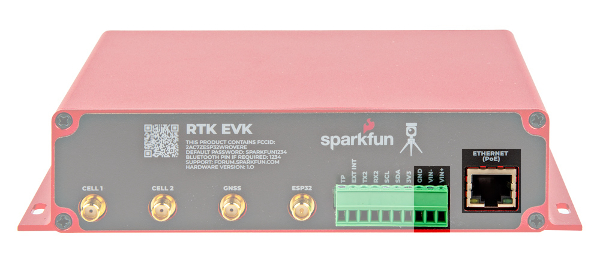
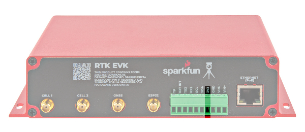
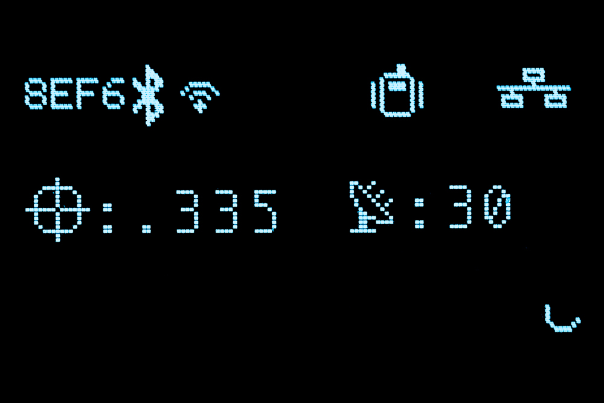
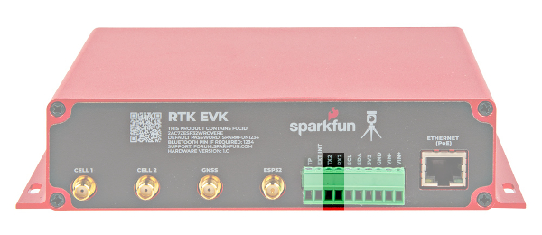
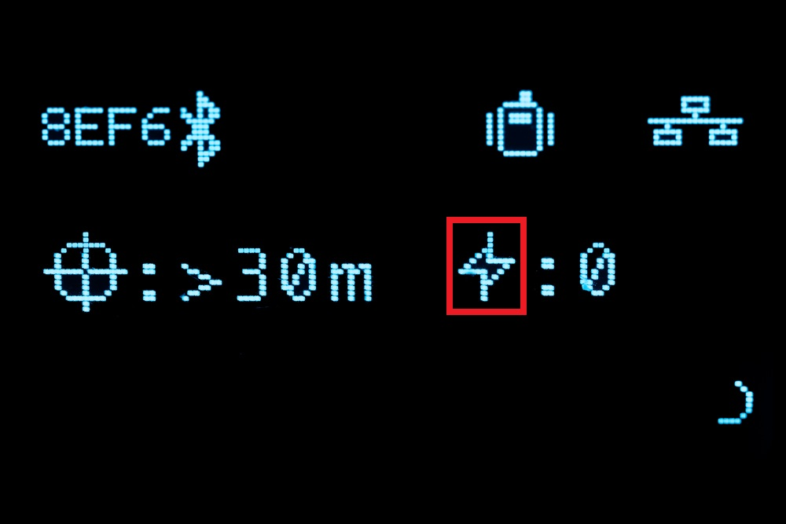
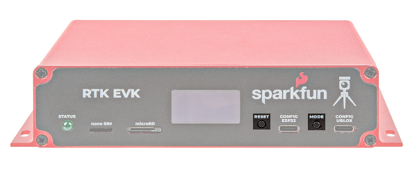
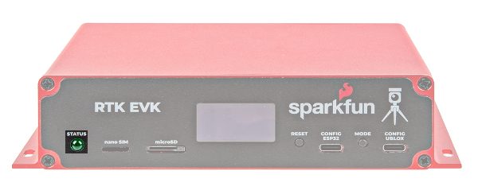
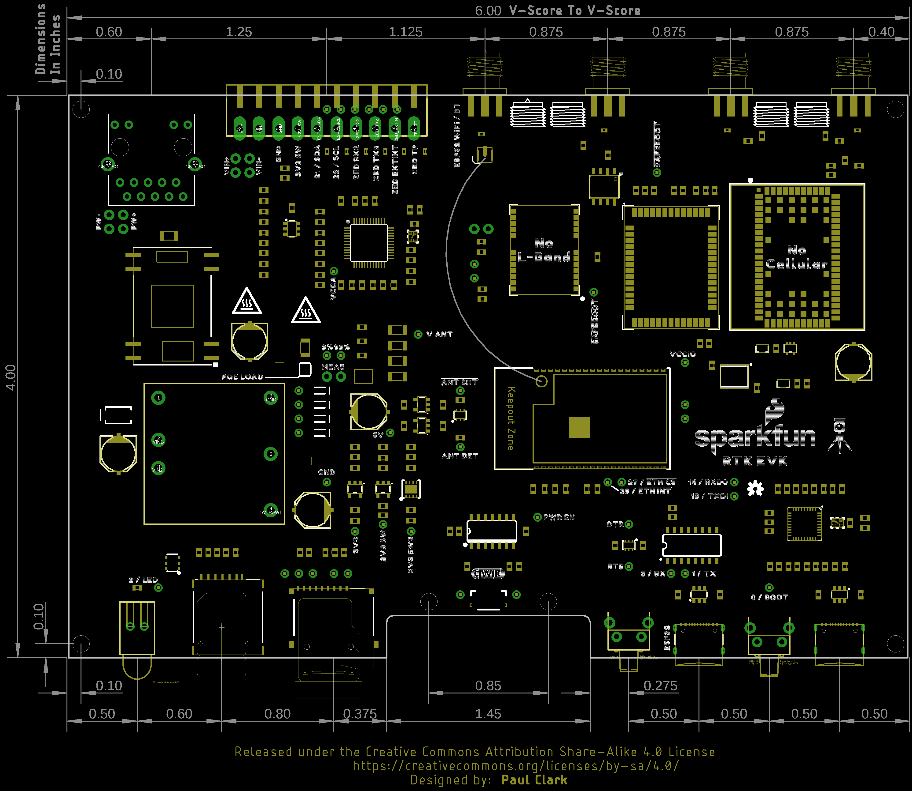
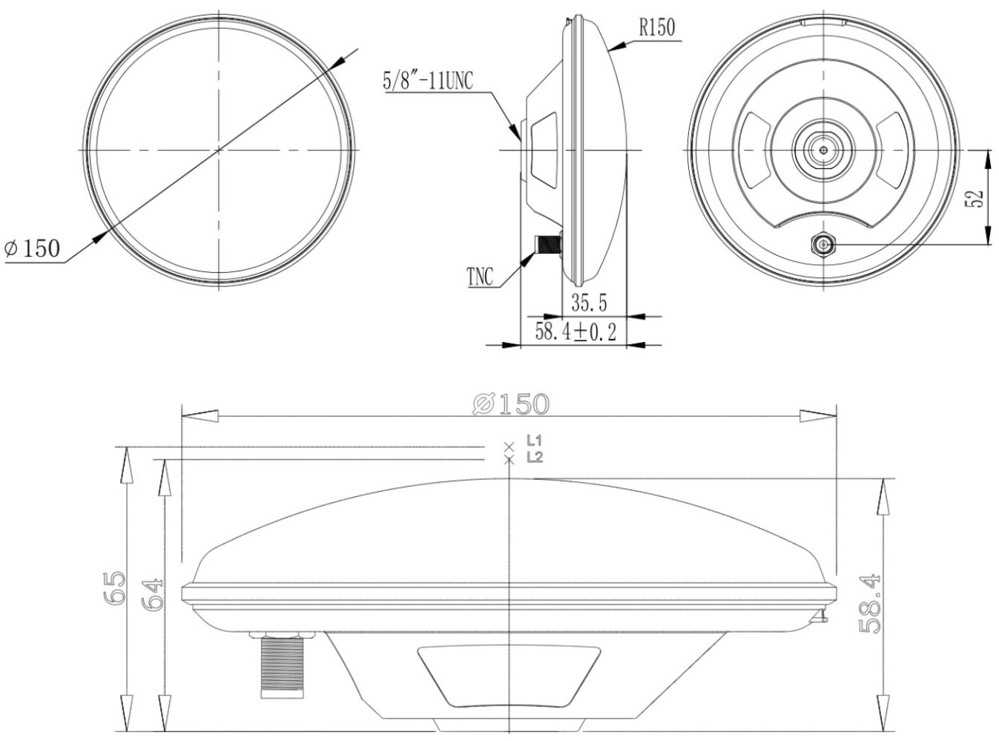

Hardware Overview
The electronics of the SparkFun RTK EVK is enclosed in a custom extruded aluminum case with machined end panels and slotted flanges.
The image below shows a top and bottom view of the populated PCB without the enclosure.
Power
The SparkFun RTK EVK can be powered from the connectors on the front or the back of the board. There is no internal battery. Schottky protection diodes and a resettable fuse are included to prevent conflicting voltages and overvoltage protection. Voltage is then regulated down to 3.3V through the three voltage regulators.
- CONFIG ESP32 — The CONFIG ESP32 includes a USB C connector to power the RTK EVK. Users can also upload code or connect to the ESP32 to a serial terminal.
- CONFIG UBLOX — The CONFIG UBLOX includes a USB C connector to power the RTK EVK as well. A USB hub is connected to this port and connects to the ZED-F9P, NEO-D9S, and LARA-R6 for users that are interested in connecting them to u-center, m-center or updating the firmware.

Power can also be provided from the I/O screw terminals or PoE.
- VIN+ — This terminal can be used to feed in external DC power between +9V and +36V. This is for users that want to power the unit from a vehicle battery or any other source in that voltage range. Connect VIN+ to the battery +ve. The voltage is first regulated to 5V by a fully-isolated DC-DC converter before being regulated again to 3.3V.
- VIN- — For external DC power, connect this terminal to the chassis, battery -ve or 0V. Note that there is no direct connection between VIN- and GND as the internal DC-DC converter is fully isolated. It is possible to link VIN- to the adjacent GND terminal, but doing so will bypass the voltage isolation and could introduce a ground loop.
- GND — The internal ground or 0V for the system.
- Ethernet (PoE) — The input voltage through the RJ45 connector can be between +36V and +57V. The voltage is first regulated down to 5V by the isolated PoE module before being regulated agin to 3.3V.
|  | |
| USB Connector, Ethernet POE, and Power Input on Screw Terminals Highlighted in Back | Ethernet POE, and Power Input on Screw Terminals Highlighted on PCB |
There is also an output power pin for 3.3V on the I/O screw terminal.
- 3V3 — This pin is the output of one of the 3.3V voltage regulators. Note that this is only connected to the secondary power. This net is also connected to the microSD card socket, ZED-F9P, NEO-D9S, USB Hub, MagJack RJ45 connector's LEDs, and WIZnet W5500.
|  | |
| 3.3V Input on Screw Terminals Highlighted in Back | 3.3V Input on Screw Terminals Highlighted on PCB |
CH340 USB-to-Serial Converter
A CH340 USB-to-Serial converter is included between the USB-C connector and the ESP32. The chip can be used to send serial data between the RTK EVK and computer. You can view the output or configure the device through a serial terminal. You can also manually upload new firmware as well.
 |
| CH340 USB-to-Serial Converter Highlighted |
The driver should automatically install on most operating systems. However, there is a wide range of operating systems out there. You may need to install drivers the first time you connect the chip to your computer's USB port or when there are operating system updates. For more information, check out our How to Install CH340 Drivers Tutorial.

ESP32-WROVER Module
The RTK Everywhere firmware is pre-loaded with the RTK EVK and flashed to the ESPRESSIF ESP32-WROVER module (with 16MB flash and 8MB PSRAM). The ESP32 handles all the processes. You can configure the EVK as a RTK base and push corrections to an NTRIP Caster. You can also configure the EVK as a RTK Rover and use corrections delivered over WiFi or Bluetooth. You can even update firmware over-the-air. For more information, we recommend checking out the RTK Everywhere Product Manual.
 |
| ESP32 Highlighted |
Note
The ESP32-WROVER module can only connect to a 2.4GHz WiFi network. Unfortunately, 5GHz is not supported on the ESP32-WROVER module.
For users that want to configure the ESP32 using a serial terminal, you will simply need to connect the CONFIG ESP32 to your computer's USB port. Once connected, open a serial terminal set to 115200 baud and press any key to open the serial configuration menu. Of course, this is only one method of adjusting the settings. You can also change the settings through WiFi, Bluetooth, and a text file saved on a microSD card.
ESP32 Primary I2C Port
The screw terminal on the back includes an I2C port. This is connected to the ESP32's primary I2C port and is shared by the ZED-F9P and NEO-D9S.
- SCL — The ESP32 I2C bus clock on pin 22. The logic level is 3.3V. Currently, there are no pull-up resistors attached to this line. To configure, you will need to add a solder blob to the I2C jumper.
- SDA —ESP32 I2C bus data on pin 21. The logic level is 3.3V. Currently, there are no pull-up resistors attached to this line. To attach the 2.2kΩ pull-up resistors to the port, you will just need to add a solder blob to the I2C jumper.
Note
3.3V and GND are also conveniently placed next to the SCL and SDA pins. These follow the same pinout as most of the SparkFun I2C breakout boards with PTHs.

The I2C peripherals connected to the primary I2C port and their address are listed below:
- ZED-F9P — 0x42 (default)
- NEO-D9S — 0x43 (default)
ESP32 Secondary I2C Port
Inside of the enclosure, there is a Qwiic vertical port available. This is connected to the Qwiic OLED via a Qwiic cable. This port is connected to the ESP32's secondary I2C port with SCL connected to pin 15 and SDA connected to pin 12. The logic level is also 3.3V. Currently, there are no pull-up resistors attached to this line. To attach the 2.2kΩ pull-up resistors to the port, you will just need to add a solder blob to the I2C jumper.
 |
| I2C Port Highlighted |
The I2C peripheral connected to the secondary I2C port and their address is listed below:
- Qwiic OLED - (1.3in., 128x64) — 0x3D (default)
Qwiic OLED Display
The RTK EVK includes the SparkFun Qwiic OLED - (1.3in., 128x64). This is connected to the ESP32 via a Qwiic port contained within the enclosure. As stated earlier, the default address for the display is 0x3D. The display provides useful information about the RTK EVK without needing to connect to a serial terminal.
 |
| OLED Display Highlighted |
Below show some of the possible outputs from the RTK EVK. The icons are explained further in the RTK Everywhere Product Manual > Hardware > Displays.
The image below shows the Bluetooth MAC address of the RTK EVK on the upper left hand corner of the screen. If there is a Bluetooth connection, the Blueooth symbol will display. To the right is the WiFi symbol. To the right of the WiFi symbol is the icon indicating the selected dynamic model, in this case it's the default portable icon. On the upper far right, is the Ethernet connection symbol. Below the Bluetooth MAC address is the RTK float solution symbol. The number to the right indicates the horizontal position accuracy. In this case, there is an RTK float since the value is between 0.400 meters to 0.200 meters. To the right is the satellites in view symbol and number of satellites. The additional antenna lines indicates that the RTK EVK that there is successful reception and decryptions of L-band corrections. Finally, the rotating semi-circle indicates the RTK EVK firmware is running. This changes to a logging icon when data is being logged to microSD card.
|  |
| OLED Display Output |
The image below is similar to the previous display output. You'll notice a few differences. The arrow pointing down indicates that there are corrections being received. The Ethernet symbol is also not displaying since there was no Ethernet connection at that moment. The horizontal positional accuracy indicates that there is a RTK fixed solution with the double cross hairs since the value is below 0.200 meters. Finally, the display is showing 29 satellites in view and no L-band corrections.
 |
| OLED Display with RTK Fixed Solution |
ZED-F9P Module
The RTK EVK wouldn't be a an RTK without well... a high precision RTK. The RTK EVK includes a built-in u-blox ZED-F9P module for high precision GNSS. You will need to connect an active multiband antenna that is capable of receiving L1 and L2 signals. The ZED-F9P can be set as a base station or rover. There are several options to send or receive correction data depending on the mode: Ethernet, WiFi network, LTE cellular network, or the NEO-D9S. As stated earlier, the ZED-F9P is connected to the primary I2C port and uses the default address of 0x42.
 |
| ZED-F9P Highlighted |
Below are a few specifications taken from the ZED-F9P's datasheet:
- Concurrent reception of GPS, GLONASS, Galileo, and BeiDou
- Receives both L1C/A and L2C bands
- 184-channel u-blox F9 engine
- Time to First Fix: 25s (cold), 2s (hot)
- Max Navigation Rate: 20Hz / 25Hz depending on mode
- Horizontal Position Accuracy: 2.5m without RTK; 0.010m with RTK
- Max Altitude: 50km (31 miles)
- Max Velocity: 500m/s (1118mph)
ZED-F9P Secondary UART Port
The screw terminal on the back includes a UART port. This is connected to the ZED-F9P's secondary UART port (UART2) for users that want to connect to other high precision GNSS modules for correction data.
- TX2 — The ZED-F9P's UART2 transmit pin. The logic level is 3.3V. Users can connect this pin to a radio module or directly to a high precision GNSS module's RX pin to provide correction data to other rovers.
- RX2 — The ZED-F9P's UART2 receive pin. The logic level is 3.3V. Users can connect this pin to a radio module or directly to a high precision GNSS module's TX pin to receive correction data provided by another base station.
|  | |
| ZED-F9P UART Correction Port Highlighted | ZED-F9P UART Correction Port Highlighted on PCB |
ZED-F9P External Interrupt
The screw terminal on the back includes an external interrupt for the ZED-F9P. The interrupt can either be an input/output pin. This can be configured using u-center to bring the module out of deep sleep or to output an interrupt for various module states. In the RTK Everywhere firmware, this terminal can be used to trigger and log a UBX-TIM-TM2 timing message. The logic level is 3.3V.

ZED-F9P Time Pulse
The screw terminal on the back labeled as TP includes ZED-F9Ps time pulse output (i.e. the pulse-per-second or PPS output). This pulses at 1Hz when the module gets basic GPS/GNSS position lock and can be configured using the u-center. The logic level is 3.3V.

NEO-D9S
The RTK EVK includes the built-in u-blox NEO-D9S for correction data. You will need to connect an antenna that is capable of receiving signals from the L-band to access u-blox PointPerfect correction service. The NEO-D9S is connected to the primary I2C port and uses the default address of 0x43. You will need a service provider to access the correction data.
 |
| NEO-D9S Highlighted |
Below are a few specifications taken from the NEO-D9S's datasheet:
- L-Band data receiver compliance: SESTB28A
- Frequency range: 1525 to 1559MHz
- Sensitivity: 133dBm
- Time to First Frame: <10s
- Receives PMP messages from Inmarsat Geosynchronous Satellites
MicroSD Card Socket
The front of the RTK EVK includes a microSD card socket. Insert a microSD card into the socket until it clicks in place. Pushing the microSD card again will eject the memory card. This is connected to the ESP32's SPI port. Power is provided by the secondary power source. Users can manually flash the firmware binaries using the microSD card as opposed to over-the-air updates. Typically, the microSD card is for datalogging. The microSD card can also hold the user preferences for anyone that is interested in deploying multiple RTK EVKs with the same settings out in the field.

LARA-R6 Cellular Module
The RTK EVK also includes the u-blox LARA-R6 cellular module for users that need to connect to a LTE cellular network. The module is connected to the ESP32 via UART.
 |
| LARA-R6 Highlighted |
Below are a few specifications taken from the LARA-R6's datasheet:
- Region: Global
- LTE FDD Bands: 1, 2, 3, 4, 5, 7, 8, 12, 13, 18, 19, 20, 26, & 28
- Certifications and approvals:
- PTCRB, GCF, FCC, ISED, RED, UKCA, NCC, RCM, Giteki, Anatel, KC, AT&T,
- Verizon, T-Mobile, Deutsche Telekom, Telefonica, NTT DoCoMo, SBM, KDDI, Telstra
Note
Although the LARA supports GSM/GPRS, the RTK EVK does not due to the high current required.
Nano SIM Card Socket
To connect to an cellular network with the built-in u-blox LARA-R6 (specifically the LARA-R6001D), you will need a nano SIM card. The cellular module works with most major North American carriers (Verizon, T-Mobile, AT&T, etc.). Make sure to check with your network service provider for compatibility. You also may need approval with the service carrier before the service is activated. We recommend using the Hologram SIM Card. Insert the SIM with the contacts facing down, insert the edge with the chamfered corner first.

{kind=link}
{kind=link}
{kind=link}
{kind=link}
{kind=link}
{kind=link}
{kind=link}
{kind=link}
{kind=link}
{kind=link}
{kind=link}
{kind=link}
{kind=link}
{kind=link}
{kind=link}
{kind=link}
{kind=link}
WIZnet W5500 IC, Ethernet Jack, and PoE
The RTK EVK includes a built-in Ethernet circuitry. You can connect an Ethernet cable to the back of the RTK EVK's RJ45 MagJack port. This connector includes status LEDs for Link and Activity. These LEDs can be disabled by cutting the jumpers on the back of the PCB. The port connects to the Power-over-Ethernet (PoE) module and WIZnet W5500 Ethernet transceiver. 10/100Mbps is supported with auto-negotiation. As stated earlier, the PoE module can be powered using the standard PoE voltages between +36V to +57V. Make sure to choose a PoE Ethernet Switch that meeds your needs. We have had good experience with the TP Link TL-SG1005P - available from many retailers including Amazon.
{kind=link}
{kind=link}
Antenna Connections
The back of the SparkFun RTK EVK includes a few connectors for cellular, GNSS, and WiFi antennas.
- Cell 1 — The SMA Connector labeled as Cell 1 is for the u-blox LARA-R6006. This connection represents the main RF input/output for LTE/3G/2G RF signals transmission and reception. This is intended to connect the LTE Hinged External Antenna - 698MHz-2.7GHz.
- Cell 2 — The SMA Connector labled as Cell 1 is for the u-blox LARA-R606. This connection represents the secondary RF input for LTE/3G Rx diversity and LTE MIMO 2x2 down-link RF signals reception. This is intended to connect the second LTE Hinged External Antenna - 698MHz-2.7GHz.
-
GNSS — The SMA connector labeled as GNSS is for the u-blox ZED-F9P and NEO-D9S. This is connected to a GNSS splitter (Power Divider) and allows you to connect a single GNSS antenna for both modules. This is intended to connect an active multiband GNSS antenna using the SMA male to TNC male interface cable that is included in the kit. The RTK EVK provides 5V on this connector for an active multiband antenna instead of the usual 3.3V. Short-circuit and open-circuit detection is built into this connection as well. The following icons will flash whenever the RTK EVK does not detect an antenna (i.e. an open circuit) or if there is a short in the cable. Next to the icons will also indicate that there will be 0 satellites in view.

 Antenna Open Circuit Highlighted Antenna Short Circuit Highlighted -
ESP32 — The RP-SMA connector labeled as ESP32 is for the ESP32-WROVER. This is intended to connect the 2.4GHz WiFi/BT antenna.
{kind=link}
 |
 |
| Antenna Connectors Highlighted on Back | Antenna Connectors Highlighted on PCB |
Buttons
There are two buttons located on the front of the SparkFun RTK EVK.
- RESET — The reset button is available for users that need to manually reset the ESP32. The reset button sits flush against the front panel to prevent users from accidentally resetting the RTK EVK. You will need to press the button firmly or use a pen.
- MODE The mode button is available for users that want to change the mode. This button is connected to pin 0 on the ESP32 and can also be used as a boot button to set the ESP32 into bootloader mode when manually uploading code with the reset button.
|  | |
| Reset and Mode/Boot Buttons Highlighted | Reset and Mode/Boot Buttons Highlighted on PCB |
{kind=link}
{kind=link}
-
RTK Modes — The available modes for the RTK Everywhere firmware are listed below. A single press brings up the mode menu. Press the button again to step through the available modes listed below. Pause on the highlighted mode then double-click to select it and change to that mode. For more information on the modes, make sure to check out the RTK Everywhere Manual.
- BASE
- This is the default mode as it is the mode we think most users will want to use - but you always surprise us with the novel ways you use our products!
- The RTK EVK will perform a short 1-2 minute "survey-in" to establish the approximate position of the antenna (~1m accuracy).
- It will then start generating RTCM correction data and - once configured - can send it to an NTRIP Caster over Ethernet or WiFi.
- The RTCM data will also be output as 3.3V Serial (UART) data on the ZED-F9P TX2 I/O screw connection on the rear panel. You can connect a radio transceiver to that pin if desired.
- You can establish the antenna position more accurately by collecting 'raw' satellite data for ~24 hours and post-processing it. You can find full instructions in the RTK Everywhere Product Manual.
- ROVER
- The RTK EVK can of course also be used as a RTK Rover.
- In Rover mode, the antenna position and other data is logged to microSD card.
- Once configured, RTCM correction data can be received over Ethernet, WiFi or Bluetooth from a NTRIP Caster and used to achieve an accuracy of ~1.4cm under good conditions.
- Use Rover mode to collect the 'raw' satellite data to establish your antenna's position accurately for Base mode.
- NTP
- The RTK EVK can also act as a Network Time Protocol Server - servicing NTP requests over Ethernet.
- The firmware defaults to using DHCP to obtain an IP Address. But you can also configure it to use a fixed IP Address and can define the DNS, Gateway and Subnet Mask too.
- You can find full instructions in the RTK Everywhere Product Manual.
- Cfg Eth (Configure-Via-Ethernet)
- Abbreviated as "Cfg Eth", Configure-Via-Ethernet mode is a dedicated mode where the RTK EVK Station can be configured via a web page over Ethernet.
- This mode works best with exclusive access to the WIZnet W5500 chip and the SPI bus and so the RTK EVK actually reboots when this mode is selected.
- When leaving this mode - either by exiting the web page or by pressing the Mode button - the RTK EVK will reboot again into Base, Rover or NTP mode. The new mode is selected by the small drop-down box on the System tab.
- You can find full instructions in the RTK Everywhere Product Manual.
- Cfg WiFi
- Abbreviated as "CfgWiFi", Configure-Via-WiFi mode is another dedicated mode where the RTK EVK can be configured via a web page over WiFi.
- By default, the RTK EVK will appear as a WiFi Hot Spot / Access Point - but it can be configured to connect to your preferred WiFi network too.
- The RTK EVK will reboot when leaving this mode - to apply any changes made.
- You can find full instructions in the RTK Everywhere Product Manual** (Configure-Via-WiFi)
- Get Keys
- When there is an Ethernet or WiFi connection, the RTK EVK can access the PointPerfect system and automatically obtain keys to allow the decryption of corrections.
- More details are provided in the RTK Everywhere Product Manual
- E-Pair (ESP NOW Pairing)
- Abbreviated as "E-Pair", ESP NOW is a way of linking two ESP32 processors via WiFi so that they can communicate with each other, line of sight up to approximately 250m.
- The ESP NOW link allows a base to share correction data with a single rover.
- More details are provided in the RTK Everywhere Product Manual

OLED Display Cycling Through Modes - BASE
-
Bootloader Mode — The boot button usually allows users to force the ESP32 into bootloader mode to manually upload new code to the ESP32.
LEDs
There are three LEDs available:
- STATUS — The built-in STATUS LED is used to indicate when the BASE mode has completed its survey-in.
- LINK — The built-in LINK LED on the RJ45 MagJack connector is connected to the WIZnet 5500's LINKLED pin and is used to indicate when there is a Ethernet Link.
- ACT — The built-in ACT LED on the RJ45 MagJack connector is connected to the WIZnet 5500's ACTLED pin and used to indicate when there is Ethernet activity.
|  | |
| LED Highlighted | LEDs on Ethernet Connector Highlighted |
{kind=link}
Jumpers
Note
If this is your first time working with jumpers, check out the How to Work with Jumper Pads and PCB Traces tutorial for more information.
The RTK EVK includes various jumpers on the back of the PCB.
- SHLD — There are two jumpers labeled as SHLD on the back of the PCB. These jumpers connect the USB Type C connector's shield pin to GND. By default, these are closed. Cut this to isolate the USB Type C connector's shield pin for the ESP32 and the ZED-F9P.
- MEAS — To enable measurements and determine how much power the RTK EVK uses, we've added a NC (normally closed) jumper between the two MEAS PTH pins. By cutting this jumper, the voltage connecting to the 3.3V voltage regulator input is interrupted. Soldering in a male jumper or wires into the accompanying holes will give you the ability to insert a current meter and precisely monitor how much current your application is consuming.
- VIN+ — The VIN+ jumper connects the I/O Screw Terminal to the 5V DC-DC converter's VIN+ pin. This is closed by default. Cut this trace to disable the connection.
- VIN- — The VIN- jumper connects the I/O Screw Terminal to the 5V DC-DC converter's VIN- pin. This is closed by default. Cut this trace to disable the connection.
- PW+ — The PW+ jumper connects the RJ45 MagJack's PW+ pin to the DP9905 PoE's VIN+ pin. This is closed by default. Cut this trace to disable the connection.
- PW- — The PW- jumper connects the RJ45 MagJack's PW- pin to the DP9905 PoE's VIN- pin. This is closed by default. Cut this trace to disable the connection.
- GNSS Reset — The GNSS reset jumper is open by default. Adding a solder blob will connect the reset button (which is currently only connected to the ESP32's reset pin) to the reset pins on both the ZED-F9P and NEO-D9S. Pulling the pin low by pressing the button will initiate a reset on the ZED-F9P and NEO-D9S. This will delete all information and trigger a cold start. As stated in the integration manual, this should only be used as a recovery option. Compared to the other jumpers, this jumper includes a 1x2 PTH. Users can also break off a 1x2 standard male header and temporarily connect a 1x2 jumper.
- I2C — This three way jumper labeled
I2Cwill connect to two pull-up resistors to the I2C data and clock lines when closed. For advanced users that do not have pull-up resistors attached to the I2C lines on their microcontroller, make sure to close the jumpers with a little solder blob. - POE LOAD — The POE LOAD creates a dummy load of 100mA on the DC/DC converter output. This is closed by default. Cut this trace to disable the dummy load.
- WIZnet W5500 Mode Jumper — For users that want to configure the WIZnet W5500 mode, there are three jumpers available to adjust the network mode. By default, the jumpers are set to 111 or "All capable, Auto-negotiation." For more information on the different modes, check out the WIZnet 5500 datasheet linked in the Resources.
- PMODE0 — Pulled high. Add as solder jumper to pull the pin low.
- PMODE1 — Pulled high. Add as solder jumper to pull the pin low.
- PMODE2 — Pulled high. Add as solder jumper to pull the pin low.
- LED — The LED jumper connects the status LED to the ESP32's pin 2. This is closed by default. Cut this trace to disable the status LED.
- LINK — The LINK jumper connects the RJ45 Link LED to the WIZnet 5500 LINKLED pin. This is closed by default. Cut this trace to disable the RJ45's Link LED.
- ACT — The ACT jumper connects the RJ45 Activity LED to the WIZnet 5500 ACTLED pin. This is closed by default. Cut this trace to disable the RJ45's Link LED.
- 3V3 SW EN — This three way jumper labeled 3V3 SW EN enables the XC6222 3.3V/700mA voltage regulator for the RTK EVK's secondary power to provide power for the RJ45 MagJack LEDs, W5500, ZED-F9P, NEO-D9S, USB Hub, and Qwiic OLED. By default, the trace is pulled high. Cut the trace and add a solder blob between the center pad and the other jumper to allow the ESP32 to toggle power using pin 32.
- 3V3 SW2 EN — This three way jumper labeled 3V3 SW2 EN enables the AP7361C 3.3V/1A voltage regulator for the RTK EVK's tertiary power to provide power for the LARA-R6. By default, the trace is pulled high. Cut the trace and add a solder blob between the center pad and the other jumper to allow the ESP32 to toggle power using pin 32.
 |
| Jumpers |
Dimensions
The SparkFun RTK EVK is designed around the Metal Enclosure - Custom Aluminum Extrusion (6in. x 4in. PCB). You can find the dimensions of the enclosure below.
 |
| Enclosure and Panel Dimensions |
Within the enclosure is the RTK EVK PCB. You can find the board dimensions below.
|  |
| Board Dimensions |
{kind=link}
For users interested in the dimensions of the surveying antenna, it is also listed below from the SPK6618H datasheet.
|  |
| SPK6618H Surveying Antenna Dimensions |
{kind=link}